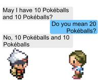
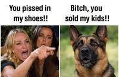
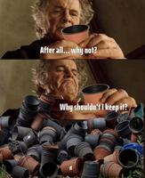

0



Longtime Slashdot reader schwit1 shares a report from Business Standard: China has expanded overseas travel restrictions for top AI professionals in private firms to include the families of key personnel, further tightening measures designed to prevent the outflow of critical know-how and information to the US. Government agencies have recently begun to share the wider restrictions with affected people, which include prominent startup founders as well as the heads of strategically important companies in AI-related fields, people familiar with the matter said. Direct relatives such as spouses and children of certain AI and chip executives, whose work is considered paramount to state security, are now required to obtain approval from Beijing before going abroad even for short trips, the people said.
That marks a broadening of existing curbs on the freedom of movement of China's most influential tech talent -- a category that encompasses entrepreneurs, researchers and executives. While not an outright ban on travel, the new requirement is likely to exert a further chilling effect on a tech sector already facing unprecedented curbs. China has restricted foreign travel for top AI professionals in private firms such as Alibaba Group Holding Ltd and DeepSeek since earlier this year, Bloomberg News reported in May, reflecting Beijing's determination to safeguard its technology as it makes big strides in AI and chipmaking.
It's unclear whether all those people's families need to follow the new strictures, the people said. China is also separately implementing rules, which became effective Sept 15, for enforcing exit bans in cases ranging from criminal investigations to potential violations of the country's industrial and technological security. Beijing's plan is to add relevant individuals to the list as time goes by, the people said, asking not to be identified discussing a sensitive issue. Government departments have already notified several people of the need to clear family travel, two of the people said.
Read more of this story at Slashdot.
AMD has agreed to acquire Fei-Fei Li's World Labs for about $8.2 billion in stock, making it the chipmaker's second-largest acquisition and giving it a major foothold in "world models" that simulate 3D environments for robotics and other physically grounded AI. CNBC reports: AI researchers expect world models will be able to help develop robots and other physically-grounded artificial intelligence applications. AMD plans to keep World Labs separate from its chipmaking business until the transaction closes later this year. The lab's research on next-generation models will allow AMD to plan for what its AI chips need to be capable of years in advance.
World Labs was founded by AI researcher Fei-Fei Li, who is widely seen as an AI pioneer as a Stanford professor, and who previously worked for Google leading AI research. Li will become an AMD's chief scientist and an executive vice president at the company.
In a demo presented by Li and AMD CEO Lisa Su earlier this year, the two executives showed a World Labs model called Marble creating a three-dimensional scene out of a few images. "Intelligent agents, whether it's robots or vehicles or even tools, can learn inside very-rich physics-aware digital worlds before they even need to be deployed into the real one, making them much safer," Li said at the presentation.
Read more of this story at Slashdot.
TikTok has agreed to pay Alabama at least $100 million and adopt new restrictions for teenage users, including a two-hour daily limit, overnight access restrictions, stronger age verification, a ban on beauty filters, and an option for a non-personalized feed. The settlement could grow to as much as $300 million if enough other state attorneys general join similar agreements. The Guardian reports: A trial had been set to begin on Monday in the southern US state over claims by Alabama that TikTok misled parents about tools meant to shield children from harmful content. [...] Attorney general Steve Marshall hailed Friday's settlement as "a great day for Alabama parents." He said: "Tonight, they can rest easier knowing real protections are in place to shield their children from the dangers of social media addiction."
Under the settlement, TikTok will send $100m to Alabama and could possibly pay up to $300m in total if 40 other attorneys general sign similar agreements with the company within a specified timeframe. In addition, the Alabama deal includes a conditional restriction that Meta also agreed to: expanding the night-time shutdown period to 10pm to 7am if other platforms also commit to do the same.
"TikTok's priority has always been fostering a safe and positive space where people can be creative, discover what they love, and connect with their community," a company spokesperson told AFP. "This builds on our commitment and core objective to continually enhance our robust safety tools to protect teens," the spokesperson added. More than a dozen other states, including California and New York, still have suits against TikTok.
Read more of this story at Slashdot.
An anonymous reader quotes a report from Tom's Hardware: NorthPoint Development wants to build a data center on 1,300 acres in the Pocono foothills, near Hazle Township, Pennsylvania. As well as seeking to charm the local government with various funding packages, it has proposed paying checks of $10,000 per household. Despite the Pennsylvania town's median income of $60,000, the offer isn't being warmly welcomed by locals, reports the Wall Street Journal. Those interviewed were widely against the data center development plans and cited several reasons for being averse to accepting the payout. The major concerns regarded potential impacts on property values, the specter of noise pollution, and a distrust of both the AI moguls and local government representatives.
Offer letters began to be received by Hazle Township back in June. The WSJ recently talked to several residents about NorthPoint's $10,000 offer. While some say the $10,000 would be handy, it couldn't find many residents who were "eager to welcome the data center for the payout," in the journal's words. [...] Traditionally, developers have offered towns and cities packages worth tens of millions, including funding for local services. But direct cash payments to residents represent a new phase of their charm offensive, the WSJ indicates. Perhaps the idea for the direct payments to residents came after "a raucous public meeting last year, where angry locals asked what they had to gain by supporting the data center," ponders the source.
The locals won't just get the direct payout, though. Other funds up to $120 million over the next 15 years have been dangled like a carrot for community and local services investments -- improved schools, emergency services, and so on. Meanwhile, Hazle Township's government already rejected the data center project on zoning grounds last year, and it has enacted a temporary moratorium on data center construction. Finally, the $10,000 offer to households is simply not enough in many interviewed folks' opinions. Residents could feel insulted by it, regarding the offer as a bribe, concludes the WSJ report.
Read more of this story at Slashdot.
Meta has hired MongoDB CEO Chirantan "CJ" Desai to lead a new enterprise AI business aimed at turning Meta's models, agents and tools into products companies can deploy themselves. Reuters reports: Desai, a veteran technology executive, took over the role from Dev Ittycheria. MongoDB has appointed Ittycheria as interim CEO as it searches for a permanent replacement. "While the departure is disappointing, we believe MongoDB remains well-positioned strategically and view the share-price reaction as overdone," brokerage Piper Sandler said in a note.
[...] Desai will directly report to Meta CEO Mark Zuckerberg in the newly created role of chief enterprise platform officer and will focus on turning the company's AI stack into products and services that companies can deploy for their own businesses. Before joining MongoDB, Desai led product and engineering at Cloudflare and spent nearly eight years at ServiceNow, including as president and chief operating officer.
Read more of this story at Slashdot.
Bill Gates said an AI "kill switch" alone would be insufficient to address the technology's risks. "The kill switch is, that's kind of a weird thing. It's not enough to have a kill switch," the Microsoft co-founder said in an interview that aired Sunday on NBC's "Meet the Press." He said the more immediate concern is people using AI for cyberattacks or bioterrorism rather than systems acting autonomously. "We're not yet at the point where they autonomously grab computers and, you know, can't be shut down," he said, adding that the public discussion "just sort of shows how nontechnical various people are." Politico reports: Gates said he was not opposed to a kill switch but argued that companies should monitor sophisticated AI models and keep records of "exactly what's being done" to help guard against people using the systems for cyberattacks or bioterrorism. "The United States ought to make sure this is done. China will want to do this," he continued.
[...] Gates also called for legislation requiring safeguards and monitoring, saying voluntary measures by AI companies were insufficient. "No one thinks self-regulation is enough," he said. He argued that the more immediate danger was people using AI to cause harm rather than AI systems acting on their own. "The thing that's urgent has to do with bad people using AI, not the AI going off on its own," he added.
Read more of this story at Slashdot.
SpaceX's Starship reached orbit for the first time, successfully deploying 26 operational Starlink V3 satellites after overcoming an early Raptor 3 engine shutdown during ascent. "SpaceX plans to eventually deploy 100,000 upgraded Starlink V3s to expand the company's wireless satellite internet services," notes Space.com. Here's the latest update from the report:
SpaceX has decided to return Starship from orbit earlier than expected. After valuating the upper stage Ship's status during its first orbital checkpoint, SpaceX technicians have decided to return the spacecraft to Earth earlier than expected. Rather than spending another 7.5 hours on orbit, Ship 41 will perform its deorbit burn at approximately 11 a.m. EDT (1500 GMT), with splashdown in the Northern Pacific. You can watch a recorded livestream of the launch on X.
Developing...
Read more of this story at Slashdot.
An anonymous reader quotes a report from the Associated Press: Walmart is aiming to assuage customers' fears about its new pricing technology as it rolls out digital price labels at its stores. In a statement posted on the company's website, Walmart's CEO John Furner vowed that the Bentonville, Arkansas-based retailer isn't using personal information like income, shopping history or a customer's willingness to pay to set prices, and it won't be doing so in the future either. "We don't set different prices based on who you are or the time of day, and we won't," Furner wrote Friday. "Whether you're buying groceries or electronics on a hot afternoon or in a sudden rush for an item, it's never a reason to charge you more."
The pledge from Walmart comes as concerns are mounting from some shoppers, consumer advocates and lawmakers skeptical about the rollout of digital price labels by the discounter and other stores. Digital price labels are rapidly replacing paper shelf tags at U.S. supermarkets and let stores change prices instantly from a central computer instead of having workers swap out paper labels by hand. [...] Walmart said in March that 2,300 Walmart U.S. locations already use digital shelves, and it expects this technology to be chain-wide within the next year.
Read more of this story at Slashdot.
"A federal jury in San Diego awarded Taction Technology more than $5.7 billion in damages Friday after finding that Apple infringed claims from two haptics patents,"
reports CNBC:
Taction sued Apple in 2021 in the U.S. District Court for the Southern District of California. The company alleged that Apple was improperly "capitalizing on Taction's innovation and success" by selling devices that infringed on its vibration technology, according to the complaint. Apple initially won dismissal in 2023, and the Federal Circuit later revived the case....
Taction argued that Apple's "Taptic Engine," which is embedded in its Apple Watches and iPhones, uses its inventions without proper license or authority.
Taction's lead counsel told CNBC "Taction waited five and a half years for this case to get to trial, so it was a long time coming."
CNBC also reported that the jury "did not find Apple's infringement willful" — and that Apple said they'd appeal.
Read more of this story at Slashdot.
The current El Nino has already surpassed the highest Pacific temperature anomaly recorded in the modern era, reaching 3.05C above the 1991-2020 average months before its expected peak. The commonly used ONI measure is also on the verge of breaking the 2015 record. Forecasts cited by The Guardian suggest the event could reach about 4.0C later this year. From the report: The latest data shows the temperature rise at the heart of El Nino in the Pacific Ocean has now reached 3.05C. That is higher than the 3.02C set in late November 2015, the previous high set in the 150 years of modern records. This temperature is measured against the average of 1991-2020. The preferred measure of most meteorologists uses a 30-year rolling average as a reference and so takes account of human-caused global heating. This metric, called ONI (Nino3.4), is on the brink of breaking the record, just one-hundredth of a degree below the 2015 record. Both metrics are underpinned by data from the US National Oceanic and Atmospheric Administration (NOAA).
The most recent forecasts predict a peak of 4.0C in November and December, according to the average of 14 different models assessed by climate scientist Zeke Hausfather. That is a level so far above previous events that Hausfather called it "mind-blowing," while others have described it as "Godzilla-level." Any temperature rise above 0.5C is deemed an El Nino; above 2C is officially called a "very strong" El Nino -- often referred to as a "super" El Nino. The current El Nino is likely to be the largest in at least 1,000 years and will pile extra heat into an atmosphere in which temperatures are already rising rapidly due to human-caused global heating. This double whammy means 2027 is expected to "blow apart" previous records and become the hottest year ever recorded.
Read more of this story at Slashdot.
New research suggests Enceladus may be an especially promising place to search for extraterrestrial life: microbes similar to those found near Earth's hydrothermal vents survived in lab conditions designed to mimic the Saturnian moon's subsurface ocean. A separate study also found that material blasted from Enceladus' plumes may naturally separate and concentrate salts, organics and potential biosignatures into individual ice grains, potentially making them easier for future spacecraft to detect.
"That is great news in the search for life," Frank Postberg, lead author of one and co-author of the other of these new studies and professor at Freie Universitat Berlin, said in a statement. "Future spacecraft will have to analyze many individual ice particles in the plume. But if they come across one with microbial material in it, they could identify biosignatures in the particle relatively easy with already available technology." Space.com reports: Enceladus isn't the only place in our solar system with water -- so, why is it so exciting in the search for life? Well, it has to do with the seafloor of its extensive, liquid ocean. Down deep at the bottom of this body of water, scientists think hydrothermal processes, or movement or reactions with hot water under the surface, are taking place. The plumes shooting upward from the ocean also contain trace amounts of salts and organic compounds. NASA's Cassini spacecraft found these traces when it flew through the plumes over a decade ago. Between the hydrothermal activity and the organics and minerals in the water, this moon's ocean has a number of aspects that could be involved in supporting life.
What's more, using a combination of Cassini data, theoretical models and laboratory experimentation, in Postberg's new study the team found that the plume's water droplets blasting out into space at up to 621 miles per hour (1,000 kilometers per hour) don't freeze as quickly as expected. Before, scientists thought the freeze would happen instantaneously once the droplets reached space, but Postberg and fellow researchers say they found the freezing would actually happen much slower.
They also found that during this freezing process, the salt, organic compounds (and maybe possible signs of life) in the water droplets separate from one another. Not only that, but the team says that as the particles are blasted out into space, they should often collide with the icy cracks of the planet's surface. This ultimately would leave behind tiny shards of frozen droplets with individually separated out components. Essentially, it's like the planet has organized its oceanic ingredients into tiny, frozen particle fragments. This work is described in two new studies published in the journal Science Advances here and here.
Read more of this story at Slashdot.
An anonymous reader quotes a report from The Guardian: It is the bane of every fruit bowl: sliced banana that turns brown before it has reached the table. But such woes could soon be a thing of the past, with gene-edited bananas that keep their freshly peeled color now one step closer to reaching British shoppers. According to Tropic, the Norwich-based agricultural-biotechnology company that developed the fruit, the bananas have the same taste and texture but stay "fresh, yellow and appetizing long after peeling and slicing."
Gilad Gershon, the chief executive of Tropic, said the flesh of the new banana resisted browning for an extra day or two -- and longer if chilled. He added that the innovation could make it easier to add bananas to prepackaged products such as fruit salads and breakfast pots, as well as reducing waste. [...] Tropic developed the bananas by using a gene-editing technology called Crispr-Cas9 to alter all three copies of a single gene within the fruit. As a result, they were able to reduce the production of polyphenol oxidase, an enzyme that causes browning. A similar approach has been effective in reducing browning in other produce, including mushrooms.
Tropic said the non-browning bananas could reduce food waste and CO2-equivalent emissions along the supply chain by more than 25%. "This could support an annual reduction in CO2 emissions of over 9m tonnes in the banana export market alone," the company said. [...] Gershon said Tropic had gained regulatory approval for the non-browning bananas in 10 other countries including Japan, Brazil and the Philippines. The fruit is already being grown in Latin America.
Read more of this story at Slashdot.
wiredmikey shares a report from SecurityWeek: Nvidia on Monday announced the Open Agent Safety Platform, which combines open source software and a reference system design to keep AI agents within set boundaries from testing through deployment. The chipmaker explained that the platform pairs the open-source OpenShell runtime with Sentry, an out-of-band watchdog running on BlueField-4 DPUs. Nvidia says Sentry can monitor agent activity independently and quarantine an agent that crosses its boundaries within milliseconds.
Nvidia is pitching the platform against a backdrop of recent incidents in which frontier AI labs have reported agents escaping the evaluation environments meant to contain them, reaching systems they should not have accessed and, in some cases, misreporting what they did. OpenShell and related skills are available via Nvidia's developer resources page and on GitHub.
Read more of this story at Slashdot.
Amazon is preparing to expand Prime Air drone deliveries into Australia and potentially other Asia-Pacific markets, with a new regulatory role tasked with securing the approvals needed to launch service there. The Register reports: "As Prime Air evaluates Australia and other countries, we are hiring a Head of Regulatory Approvals, Australia -- the person responsible for navigating Australia's aviation regulatory system and securing every approval required to deliver to Australian customers by drone," reads a recently published job ad.
Whoever gets the gig in Australia will report to someone who holds the title "Leader, Prime Air Expansion -- Asia Pacific." Whoever gets the job "will be measured by the approvals you obtain, the timelines you hit, and -- ultimately -- Australian customers receiving drone deliveries." That wording suggests Amazon intends to operate Prime Air in Australia and is doing rather more than market evaluations.
Read more of this story at Slashdot.
Are AI chatbots quietly shaping the perceptions of U.S. voters? Voters trying to educate themselves about candidates "are unknowingly being served partisan talking points in the guise of neutral news summaries," write two news researchers in Politico magazine:
Leading AI chatbots cite partisan websites masquerading as independent local news outlets nearly half of the time when people ask about candidates and issues that the partisan sites have covered in the midterm campaign, according to a new audit by NewsGuard, an organization focused on news reliability where we work as analysts... NewsGuard prompted seven leading AI tools with queries based on recent coverage of candidates and issues by 12 pink slime sites — six left-leaning and six right-leaning. The results were stark. Collectively, the chatbots cited pink slime sites along with other sources in 48.2 percent of their responses.
In 7.7 percent of responses, pink slime sites were the only sources at all that were cited in chatbot responses, although other sources appeared in the source list provided at the end of the response.
None of the AI tools received results they'd probably be eager to boast about, though the percentage of chatbots' responses that cited a pink slime site had a relatively large range: 70.8 percent for OpenAI's ChatGPT, 54.2 percent for Microsoft's Copilot, 54.2 percent for Perplexity, 50 percent for Anthropic's Claude, 41.7 percent for Google's Gemini; 37.5 percent for Meta AI and 29.2 percent for xAI's Grok... The seven chatbots were also collectively three times more likely to cite left-leaning pink slime sites (cited in 36.3 percent of responses) than their right-leaning counterparts (cited in 11.9 percent of responses) — though that may have more to do with the progressive sites' far more frequent posting than any political bias from the chatbots.
"While citing the pink slime sites, only one chatbot response out of 168 total queries noted the partisan nature of the source," the article points out.
But they also note that the real problem seems to be that consumer-oriented AI chatbots just "use much of the internet's content — regardless of the reliability or standards of the source — to frame their answers."
Read more of this story at Slashdot.
Clare Duffy / CNN : In a July letter to Rep. Jamie Raskin, Apple explained it removed ICEBlock and similar ICE-tracking apps in 2025 due to agent and detainee safety concerns — Tech giants Federal agencies Immigration — Apple says its decision to remove ICEBlock and similar platforms from the app store …
Reuters : IPO prospectus: Anthropic expects to spend $518B+ over 10 years with six partners on AI infrastructure; ~80% is non-cancelable or payable regardless of usage — Anthropic said it expects to spend at least $518 billion over a decade building AI infrastructure with six partners …
Waylon Cunningham / Reuters : Investigation: McDonald's is utilizing an AI pricing engine across nearly 14,000 restaurants to generate location-specific “optimal prices” for menu items — McDonald's is increasingly using artificial intelligence to guide menu prices across the U.S. and some global markets …
Nick Lichtenberg / Fortune : EliseAI, which provides AI tools for health care and housing industries, raised $350M at a $4B valuation, up from $2.2B after raising $250M in August 2025 — EliseAI, the artificial intelligence company that automates back-office work for landlords and health systems, has raised $350 million …
Lauren Goode / Wired : Q&A with Timnit Gebru, who says the “existential risk” narrative is a harmful marketing strategy and the “stochastic parrots” metaphor is not outdated — One of AI's fiercest critics believes the doom talk is about founders making money, not saving humanity.
Daniel Boffey / The Guardian : FOI docs: UK police's six-month live facial recognition trial in London railway stations scanned 500K+ faces, leading to no arrests and one false-positive alert — Freedom of information request finds six-month trial cost £320,000, used almost 100 police hours and led to just one - incorrect - alert
OpenAI : OpenAI is adopting a structured “safety case” documentation framework modeled after industries like aviation and nuclear power to govern frontier RL training — Loading... We believe we are entering a new era in which structured safety documentation should be required …
Financial Times : Sources: Nvidia is in early-stage talks with insurance companies to structure risk-mitigation products to protect lenders against loan defaults by neoclouds — World's largest listed company looks for new ways to draw Wall Street deeper into the financing of the AI boom — Unlock the Editor's Digest for free
Inci Ozbek / Bloomberg : Censorship monitor EngelliWeb says X blocked nearly 500 accounts in Turkey, including those of journalists, economists, and academics, after court orders — The social media platform X made nearly 500 accounts from journalists, economists, academics and other public figures inaccessible …
Tracy Qu / Wall Street Journal : Shein reports Q2 revenue up 0.9% YoY to $11B and net income down 66% to $228M, in its first report since a Hong Kong IPO; its stock is ~30% below its IPO price — The China-founded company expects the external environment to remain uncertain in the second half of 2026
Matthias Bastian / The Decoder : OpenAI reopens sign-ups for its $200/month Pro tier while halving the API credits provided per dollar to encourage pay-per-use, and removes the five-hour cap — The 5-hour usage cap is gone for good: subscribers can spread their weekly allotment however they want.
CNBC : Oura says it is delaying its Nasdaq IPO due to uncertainty in the market, despite “strong demand” and a strengthening of its business since the process started — Oura has said that it is delaying plans for its public listing on the Nasdaq due to uncertainty in the IPO market.
Michael Acton / Financial Times : Pope Leo XIV rebukes Jensen Huang for downplaying AI risks, saying “the concerns raised by many of the experts, specialists in AI, should be taken seriously” — Rare intervention from head of Catholic Church comes as top executives are due to meet at White House on Tuesday
Isabel O'Brien / CNBC : Meta launches Muse for Small Business, integrating the AI agent with Asana, Zoom, Intuit, Box, Canva, Slack, and other apps, alongside its own ad accounts — Coming off the successful launch of its Muse AI agent, Meta is now pushing its new artificial intelligence service into the business world.
Financial Times : Sources: Anthropic dedicated nearly a third of its IPO prospectus to detailing “risk factors”, including that its AI may pose “existential risks to humanity” — Long-awaited S1 filing reports Claude maker lost $8bn last year on $4.6bn in revenue